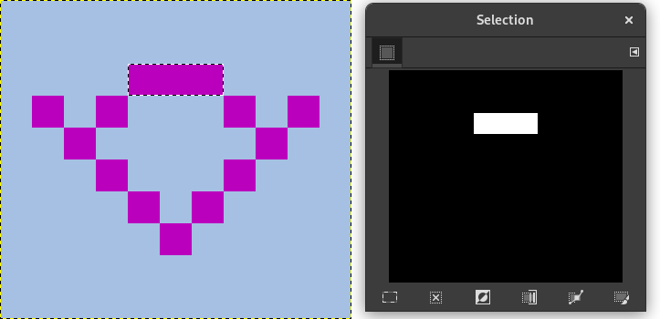

The Fuzzy Select tool is designed to select areas of the current layer or image based on color similarity.
When using this tool, it is very important to pick the right starting point. If you select the wrong spot, you might get something very different from what you want, or even the opposite.
Fuzzy Select is a good tool for selecting objects with sharp edges. It is fun to use, so beginners often start out using it a lot. You will probably find, however, that the more you use it, the more frustrated you become with the difficulty of selecting exactly what you want, no more, no less. More experienced users find that the Path and Color Select tools are often more efficient, and use the Fuzzy Select tool less. Still, it is useful for selecting an area within a contour, or touching up imperfect selections. It often works very well for selecting a solid-colored (or nearly solid-colored) background area.
Note that as the selected area expands outward from the center, it does not only propagate to pixels that touch each other: it is capable of jumping over small gaps, depending on Threshold option. To increase/decrease Threshold, during the use of Fuzzy Selection, after the first button-press, dragging the pointer downward (or to the right) or upward (or to the left).
There are different possibilities to activate the tool:
-
From the main menu: → → .
-
By clicking the tool icon
 in the Toolbox.
in the Toolbox.
-
By pressing the U keyboard shortcut.
The Fuzzy Select tool does not have any special key modifiers, only the ones that affect all selection tools in the same way. See Section 2.1, “Common Features” for help with these.
It starts selecting when you click at a spot in the image, and expands outwards like water flooding low-lying areas, selecting contiguous pixels whose colors are similar to the starting pixel. You can control the threshold of similarity by dragging the mouse downward or to the right: the farther you drag it, the larger you get the selected region. And you can reduce the selection by dragging upwards or to the left.
You can move the selection outline using Alt + arrow keys.
Normally, tool options are displayed in a window attached under the Toolbox as soon as you activate a tool. If they are not, you can access them from the main menu through → → which opens the option window of the selected tool. The available tool options can also be accessed by double clicking the corresponding tool icon in the Toolbox.
- Mode, Antialiasing, Feather edges
-
![[Note]](images/note.png)
Note See Selection Tools Options for help with options that are common to all these tools. Only options that are specific to this tool are explained here.
- Finding Similar Colors
-
These options affect the way Fuzzy Select expands the selection out from the initial point.
- Select Transparent Areas
-
This option gives Fuzzy Select the ability to select areas that are completely transparent. If this option is not checked, transparent areas will never be included in the selection.
- Sample Merged
-
If you enable this option, sampling is not calculated only from the values of the active layer, but from all visible layers.
For more information, see the Glossary entry.
- Diagonal Neighbors
-
When activated, the tool considers diagonally neighboring pixels as connected when calculating the affected area. In other words, instead of looking at the four orthogonal neighbors of each pixel, it looks at all eight pixels
Figure 14.20. Example for Diagonal Neighbors

A pixel with 4 orthogonal neighbors

A pixel with 4 diagonal neighbors
A pixel with 8 neighbors
Figure 14.21. Example for Diagonal Neighbors option applied

Diagonal Neighbors option unchecked

Diagonal Neighbors option checked
- Threshold
-
This slider determines the range of colors that will be selected at the moment you click the pointer on the initial point, before dragging it: the higher the threshold, the larger the resulting selection. After the first button-press, dragging the pointer downward or to the right will increase the size of the selection; dragging upward or to the left will decrease it. Thus, you have the same set of possibilities regardless of the Threshold setting: what differs is the amount of dragging you have to do to get the result you want.
- Select by
-
This option determines which component of the image GIMP uses to calculate the similarity in color.
You can choose from , , , , , , . , , , and .
- Draw Mask
-
This option can help to visualize the selection. Selected areas marked with marching ants may not be evident when selecting with Fuzzy Select. If this option is checked, selected areas will be filled with a magenta color as long as you keep pressing on the left mouse button, and this mask will disappear as soon as you release this button.
Figure 14.22. Example for Draw mask option applied
Fuzzy Select used with Draw Mask option unchecked

Fuzzy Select used with Draw Mask option checked, left mouse button not released yet.